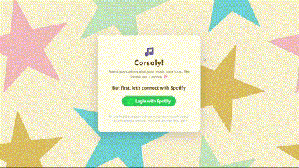

Sup!
I'm Dimasputra.
A Full-Stack Web and AI Developer.
Trying to make fun things as much as i can
Overview!
Alright, so picture this: In front of you, there's a handsome,
cool, and fun looking indonesian male, but that's just me, Dimas
Putra Aryawan, but you can call me! Uta. Currently a brainiac that
studies Computer Science at uni, no biggie. Surprisingly, i'm
unapologetically nerdy, like
gets-excited-about-clean-code-and-perfectly-optimized-algorithms
nerdy. But honestly? Who doesn't love to see it?.
A full-blown music junkie, probably has more playlists than
friends (just kidding, (i think)). Constantly blessed with
everything from girly kpop songs to classic hiphop and raps. And
also, i'm a serious cinephile. Someone that likes to melt my own
brain with crazy plot twist with for hours.
What am i doing currently? funny you should asked that, i'm a very
busy guy what can i say? (cap). But for real, i'm currently
focusing on internship, while trying to build fun projects in the
mean time. But to be honest? if you call me, i'm probably sitting
on a couch watching some 3 starred rating letterboxd movie or
listening japanese 80s city pop.
Projects!
-
Willify folder_code
First project! I think of it like a mini version of Genius. Even though it was built with simple html, I was pretty proud of this one not gonna lie. Took apple's dynamic island as the navbar lol.
HTML CSS JS

-
TEA folder_code
which stands for Text-Emotion-Analyzer, is my very first AI project. This is a web app that can analyze the emotion of the inputted text and show their prediction probability on a graph-based plot.
Python Sklearn HTML CSS

-
MoodMelodyAI folder_code
Almost the same as Text-Emotion-Analyzer, but it also can recommend the user some songs (that are clickable and will redirect it to the spotify) that are paralleled to the current predicted mood. This was a group project.
Python Sklearn NLTK ReactJS
-
SubDue folder_code
This is a subscription reminder app. It lets users add subscription, track its due date, show graph-based analytics on user's spendings, and view other app recommendations. It was also a group project.
ReactNative ExpoGo
-
Corsoly folder_code
This platform lets users to check their spotify top 5s based on their listening history in the last 1 month. Pretty fun solo project out of curiousity. But since spotify has a strict rule of the usage of spotify APIs, this isn't available for public (yet 😜).
ReactJS
